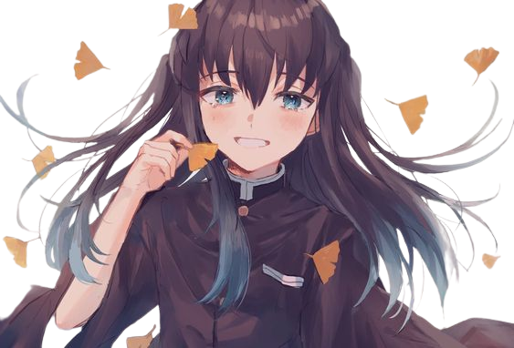
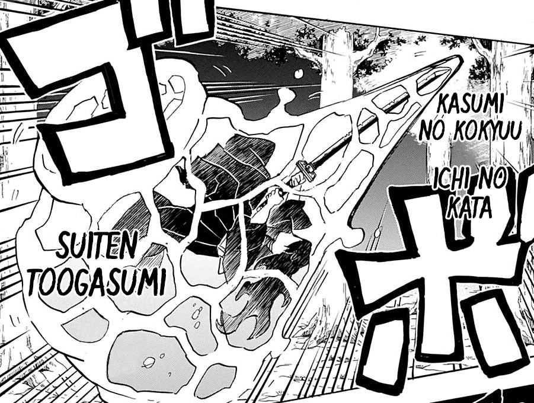
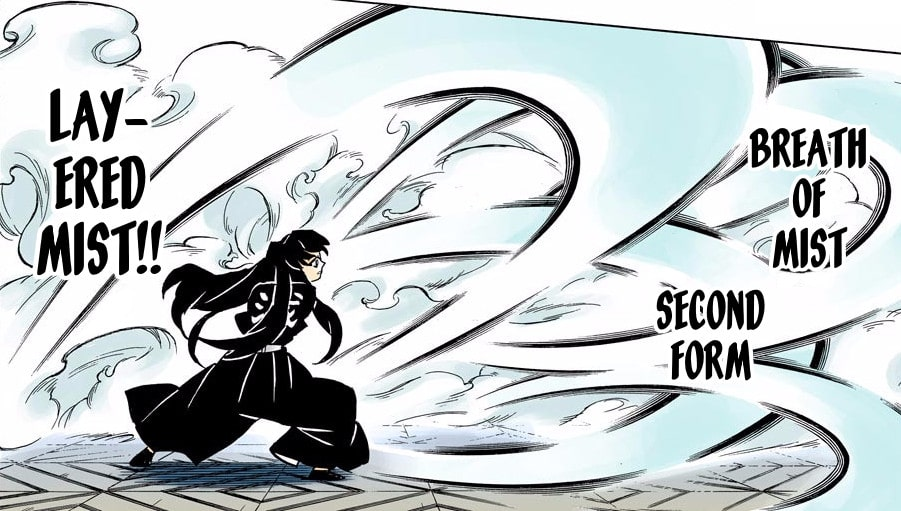
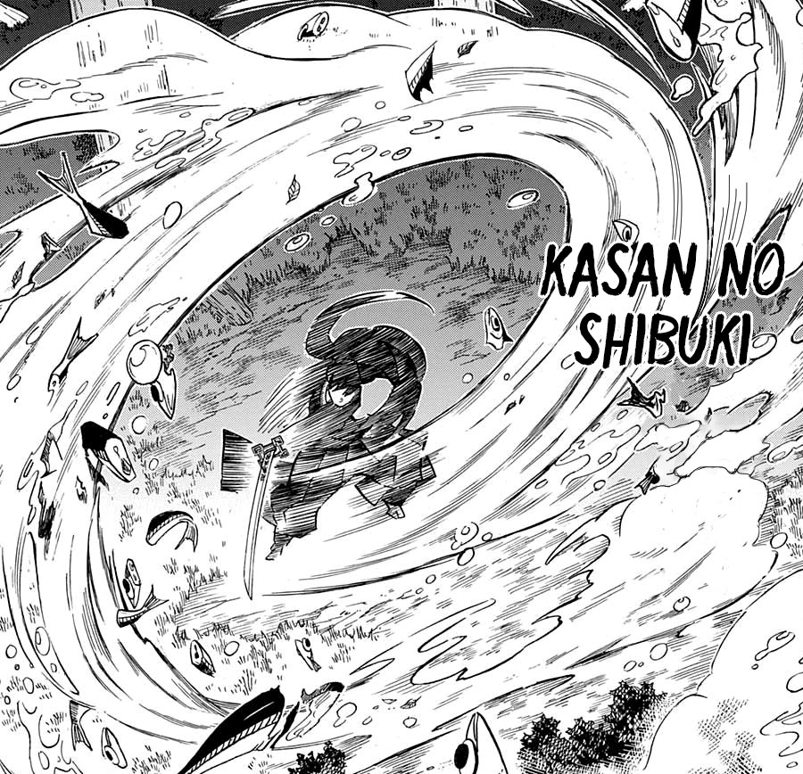
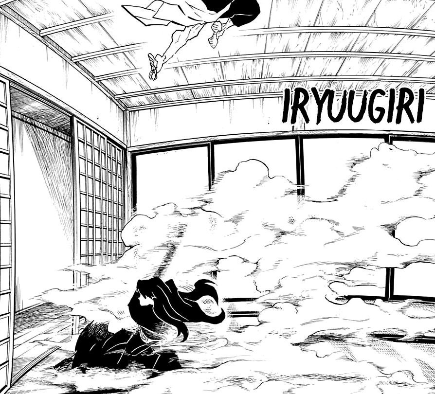
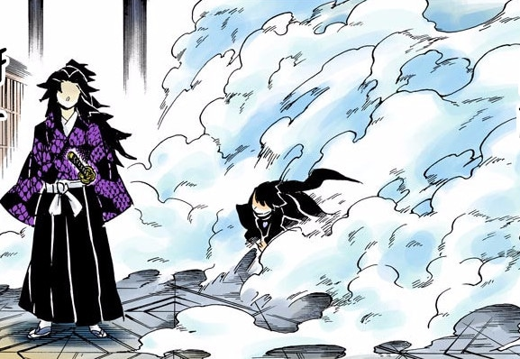
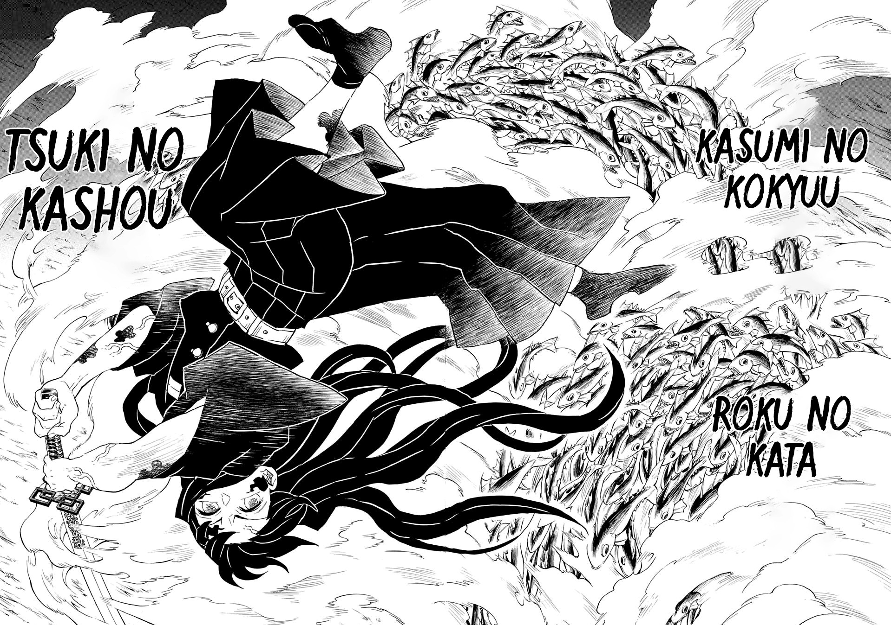
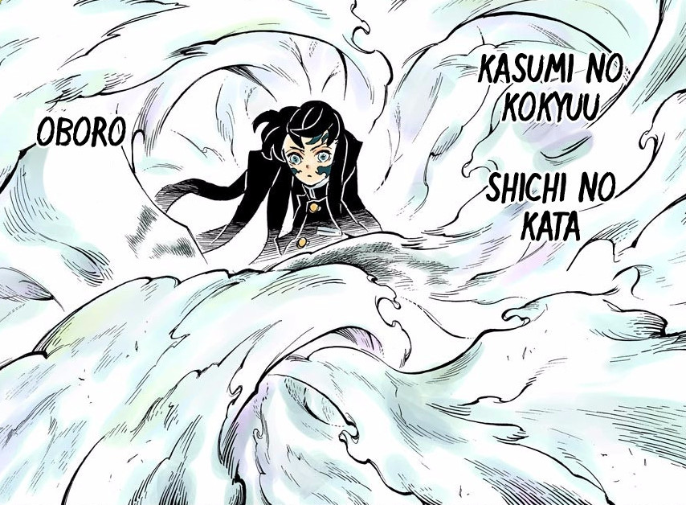

Muichiro Tokito
História
Muichiro Tokito é filho de um pobre lenhador e sua esposa, assim como Tanjiro Kamado, fazia parte de uma família muito humilde que vivia em uma floresta distante. Infelizmente sua família feliz não teve um bom destino, já que sua mãe morreu após pegar um resfriado que evoluiu para uma doença mais grave e seu pai, que partiu em busca de ervas medicinais para sua esposa, caiu do penhasco durante sua busca.
Isso fez com que Muichiro e Yuichiro – seu irmão – tivessem que viver sozinhos com apenas dez anos de idade. Ambos os irmãos desenvolvam personalidades diferentes: Yuichiro sendo mais frio e controlador para manter os dois vivos e Muichiro se tornou um garoto gentil, alegre e bondoso.
Já com os gêmeos morando sozinhos, Oyakata-sama (esposa do grande senhor dos Caçadores de Demônio) os visitou na esperança de recrutá-los, mas Yuichiro foi contra a ideia enquanto Tokito acreditava que esse poderia ser o sentido de sua vida. Infelizmente, um tempo depois, os dois são atacados por um Oni e Yuichiro acaba muito ferido, inclusive perdendo seu braço, enquanto Muichiro enfrenta o Oni e o derrota, apesar de ficar gravemente ferido no fim do combate.
Após perder toda a família, Tokito foi recrutado para a Demon Slayer Corps. Os ferimentos acabaram lhe causando perda de memória, o que lhe tornou um jovem frio e sem sentimentos. Assim, ele se tornou um prodígio entre os caçadores e o Hashira da Névoa que conheceremos no Arco da Vila dos Ferreiros.

habilidades
Apesar de ter aparentado ter um corpo fraco e magro por conta de sua aparência visual, Tokitou foi extremamente forte e ágil, sendo um dos mais fortes caçadores de demônios no quesito brutal, inclusive, nem mesmo Tanjiro conseguiu arranhá-lo, sendo que, mesmo torcendo seu braço, Tokitou não mostrou sinais de fraqueza e não ligou para a força que Kamado depositava em seu membro. Além disso, Muichirou deteve muita raiva para com os demônios, fato que lhe trouxe bastante êxito nos treinamentos, já que o ajudou a ficar mais forte de forma mais clara e sem muita enrolação. Apesar de não aparentar, como visto em sua própria caricatura, o intérprete era dono de muitos músculos e um corpo bem treinado, que o ajuda a derrotar os inimigos.
Respiração da Névoa
O personagem é conhecido por dominar completamente o estilo de Respiração da Névoa, sendo o mais apto em combate quando o assunto é esse poder. Ele domina todas as Seis Formas desse estilo, mas não apenas isso: Tokito criou seu próprio estilo dentro da Respiração da Névoa, conhecida como Sétima Forma, chamada Nuvens Obscuras!
Ele aprendeu esse estilo com um cultivador e se tornou o usuário mais habilidoso de sua geração.
Nuvens baixas, neblina distante ( Ichi no kata: Suiten Tōgasumi)

O usuário desencadeia um poderoso ataque de impulso de forma frontal
Segunda Forma – Névoa com Oito Camadas ( Ni no kata: Yaekasumi)

O usuário desfere um total de oito golpes rápidos e um seguido do outro, sem parar
Terceira Forma – Respingo da Névoa ( San no kata: Kasan no Shibuki)

O usuário libera um corte poderoso e em forma circular na frente de seu oponente, mas também pode ser usado para explodir projéteis lançados contra ele ou seus aliados
Quarta Forma – Corte de Advecção (Shi no kata: Iryūgiri)

Rapidamente desembainhando sua espada, o usuário avança em direção ao inimigo em grande velocidade e realiza um corte rápido por baixo dele
Quinta Forma – Mar de Nuvens e Neblina ( Go no kata: Kaun no Umi)

Avançando em alta velocidade, o usuário desfere uma rajada de golpes que cobrem uma ampla área enquanto seus movimentos ficam cada vez mais ilegíveis
Sexta Forma – Neblina Lunar ( Roku no kata: Tsuki no Kashō)

nesta forma, o usuário dá várias cambalhotas no ar e, enquanto está de cabeça para baixo, efetua inúmeros cortes à distância que são capazes de dizimar dezenas de alvos de uma só vez
Sétima Forma: Nuvens Obscuras

essa é a criação pessoal de Muichiro Tokito, sendo uma técnica onde o usuário muda drasticamente o ritmo de seus movimentos para confundir seu inimigo. Ele some em meio a névoa e, quando o usuário se mostra, sua velocidade aparenta estar extremamente lenta, mas quando se esconde nas nuvens, o usuário se move velozmente